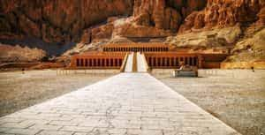
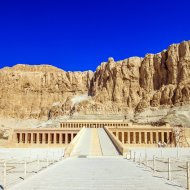

Египет - красивая страна

Египет – это удивительная страна с богатой историей, которая насчитывает тысячи лет. Здесь находятся одни из самых известных памятников древней цивилизации, включая величественные пирамиды Гизы и знаменитый Сфинкс. Эти архитектурные шедевры ежегодно привлекают миллионы туристов, желающих прикоснуться к загадкам прошлого.
 Культурное наследие Египта не ограничивается древними постройками. Посетители могут насладиться великолепием Каирского музея, в котором хранятся бесценные артефакты, включая сокровища Тутанхамона. Прогулка по старинным улочкам Каира позволит окунуться в атмосферу традиционного восточного базара и увидеть мечети, поражающие своим величием.
Египет также известен своими живописными пляжами и курортами на побережье Красного моря. Гургада и Шарм-эль-Шейх предлагают отличные условия для дайвинга, сноркелинга и других водных видов спорта. Подводный мир Египта славится коралловыми рифами и разнообразием морской фауны, которые впечатляют даже опытных дайверов.
.jpg)
Для любителей природы Египет предоставляет возможность исследовать пустыни и оазисы. Сафарийные туры позволяют увидеть уникальные ландшафты, включая Белую и Чёрную пустыни. Эти места привлекают путешественников своей загадочной красотой и необычайным спокойствием.
.jpg)